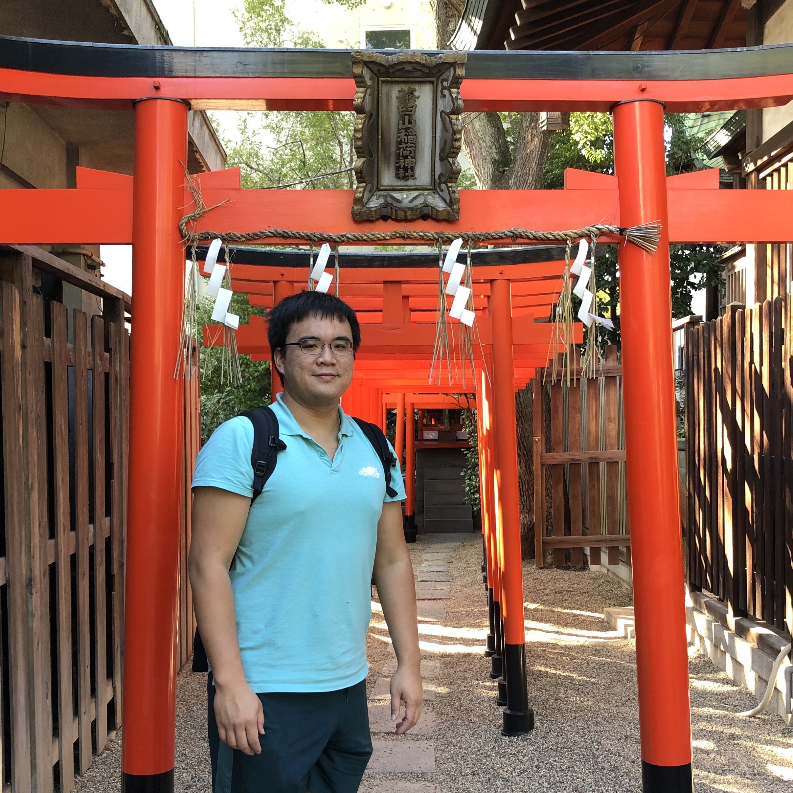

Adam Iou-Jen Liu
|
I am a PhD student in Electrical and Computer Engineering at University of Illinois at Urbana-Champaign. I work with Professor Alexander Schwing on Deep Reinforcement Learning. I received my master and bachelor degree, both in EE, from National Taiwan University (NTU), Taiwan. In NTU, I worked with Professor Yao-Wen Chang on Electronic Design Automation (EDA). Email / CV / Google Scholar |
 |
| Affiliations |

|
|||
| National Taiwan University 2008 - 2015 |
University of Illinois 2015 - present |
D-Wave Summer 2017 |
Microsoft Research Montreal Summer 2021 |
|
Publications
Unnat Jain, Iou-Jen Liu, Svetlana Lazebnik, Aniruddha Kembhavi, Luca Weihs*, Alexander G. Schwing* International Conference on Computer Vision (ICCV), 2021 [pdf] [project] Iou-Jen Liu*, Zhongzheng Ren*, Raymond A. Yeh*, Alexander G. Schwing (*equal contribution) IEEE/RSJ International Conference on Intelligent Robots and Systems (IROS), 2021 Reinforcement Learning for Real Life Workshop at ICML, 2021 Iou-Jen Liu, Unnat Jain, Raymond A. Yeh, Alexander G. Schwing International Conference on Machine Learning (ICML), 2021 (Long Talk) [pdf] [project] [code] Iou-Jen Liu, Raymond A. Yeh, Alexander G. Schwing Neural Information Processing Systems (NeurIPS), 2020 [pdf] [project] [code] Iou-Jen Liu*, Raymond A. Yeh*, Alexander G. Schwing (*equal contribution) Conference on Robot Learning (CoRL), 2019 [pdf] [project] [code] Youjie Li, Iou-Jen Liu, Yifan Yuan, Deming Chen, Alexander G. Schwing, Jian Huang ACM/IEEE International Symposium on Computer Architecture (ISCA), 2019 [pdf] [video] Iou-Jen Liu, Jian Peng, Alexander G. Schwing International Conference on Learning Representations (ICLR), 2019 [pdf] Iou-Jen Liu, Shao-Yun Fang, Yao-Wen Chang IEEE Transactions on Computer-Aided Design of Integrated Circuits and Systems (TCAD), Vol. 35, 2016 ACM/IEEE Design Automation Conference (DAC), 2014 [pdf] Iou-Jen Liu, Shao-Yun Fang, Yao-Wen Chang IEEE Transactions on Computer-Aided Design of Integrated Circuits and Systems (TCAD), Vol. 34, 2015 ACM/IEEE Design Automation Conference (DAC), 2013 [pdf] Teaching Head Teaching Assistant, Spring 2017 - present Teachers Ranked as Excellent: Spring’17, Spring’18, Fall’18, Spring’19, Fall’19 |